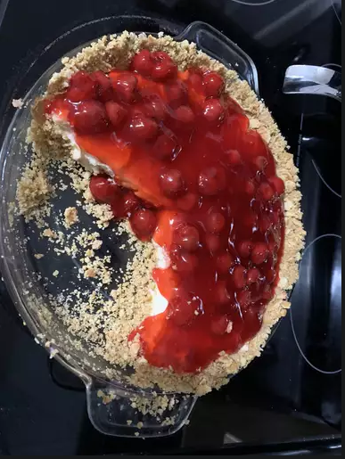
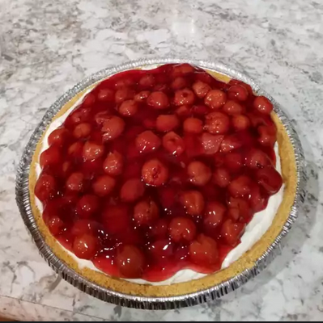

Cheesecake

This no-bake cherry cheesecake has a graham cracker crust and an easy cherry pie filling spread over top. It's delicious and will delight everyone in the family! It's so quick and easy to make. My husband refuses to eat baked cheesecake after eating this.
Heres what you need to enjoy this amazing recipe
Ingredients
Graham Cracker Crust
- 1 ¼ cups graham cracker crumbs
- ¼ cup unsalted butter, melted
- ¼ cup white sugar
Filling
- 1 (8 ounce) package cream cheese, softened
- 1 cup powdered sugar
- 1 teaspoon vanilla extract
- 1 cup heavy whipping cream
- 1 (12.5 ounce) can cherry pie filling (or any other flavour you desire)
Directions
Step 1
- Mix together graham cracker crumbs, margarine, and sugar for crust in a bowl until well incorporated and crumbly. Press mixture into a 9-inch pie plate, going up the sides as much as possible.
Step 2
- Beat cream cheese, powdered sugar, and vanilla for filling in a bowl with an electric mixer until smooth and spreadable.
Step 3
- Beat cream in a chilled glass or metal bowl with an electric mixer until soft peaks form.
Step 4
- Fold whipped cream into the cream cheese mixture until smooth. Pour filling into the prepared crust.
Step 5
- Smooth the top with a spatula, and refrigerate until firm, about 2 to 3 hours.
Step 6
- Spread cherry pie filling over the chilled cheesecake.
Step 7
- Serve immediately or refrigerate until serving.
- Enjoy!! :)

Return to top
Return to main page